KITE-07 / Enemy visual replacement
One original compact hover security unit. Player / AI / weapons / Arena gameplay unchanged.
Visible presentation replaced; the real legacy VRM firing rig is retained and hidden. This does NOT resolve AvatarSample_A public-release authorization. No fake skeleton or weakened test.
Report / contract / limits · Final validation
Real OpenGL screenshots. Controlled views are labeled separately from the normal-AI production route. Automated input/API evidence, not manual acceptance.
Visible replacement, same firing driver
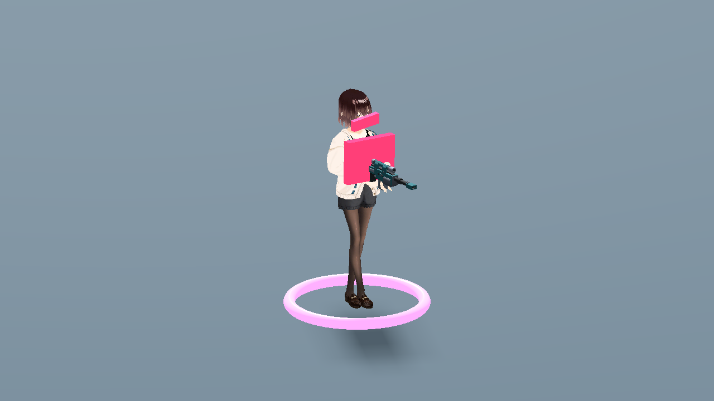
legacy_front.png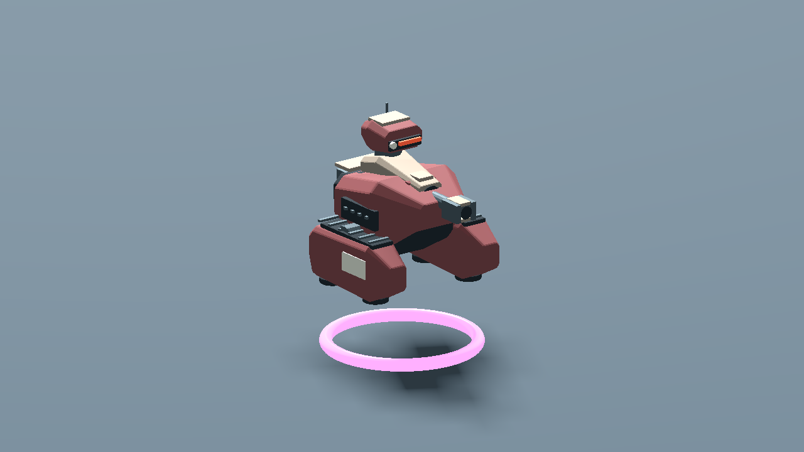
drone_front.pngSide / rear
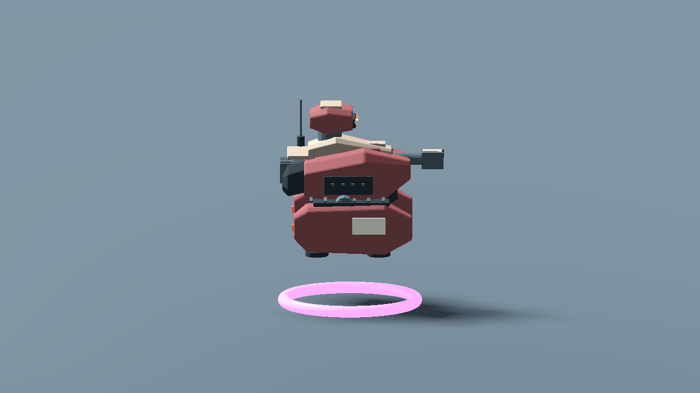
drone_side.png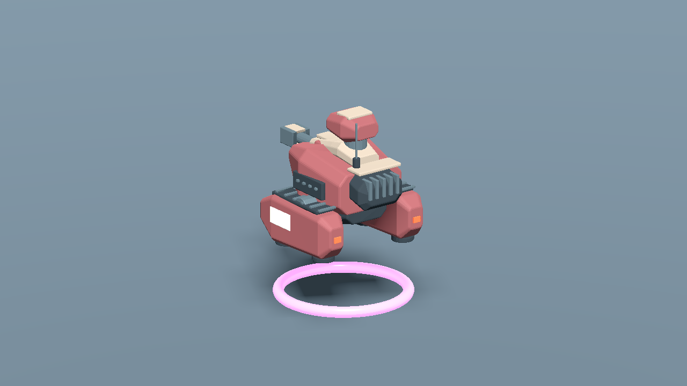
drone_rear.pngGameplay-angle readability: medium / far
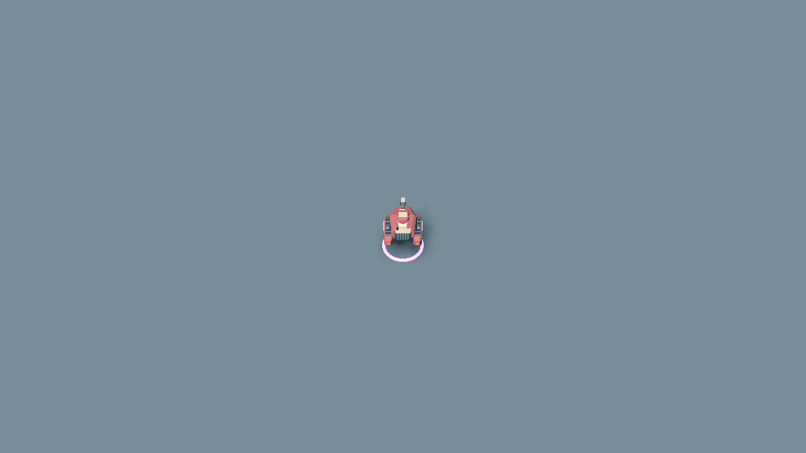
readability_medium.png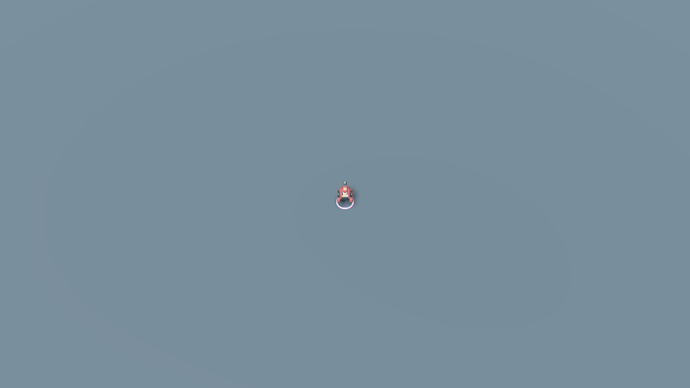
readability_far.pngTelegraph / hit
telegraph.png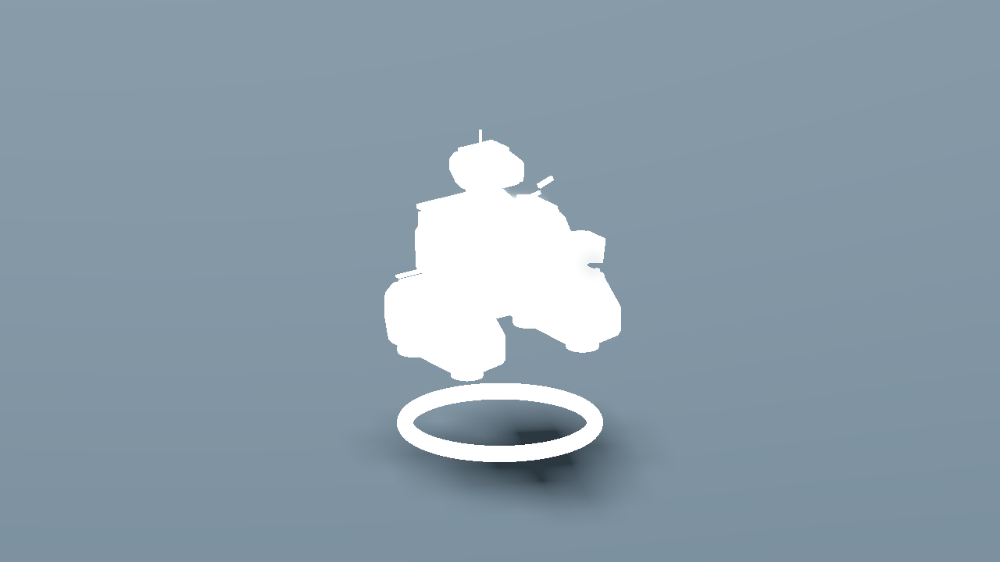
hit.png Mechanical wreck / production combat
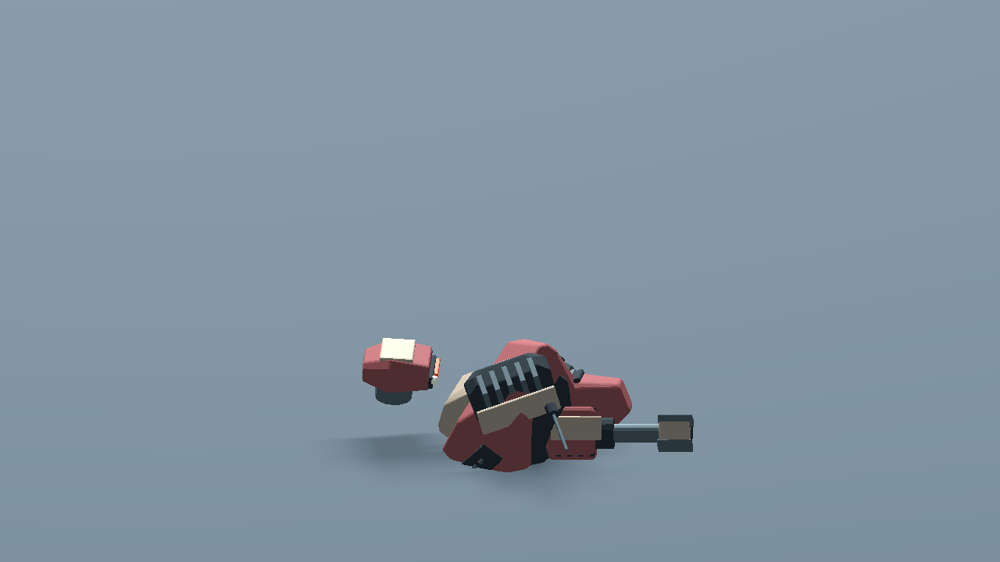
wreck.png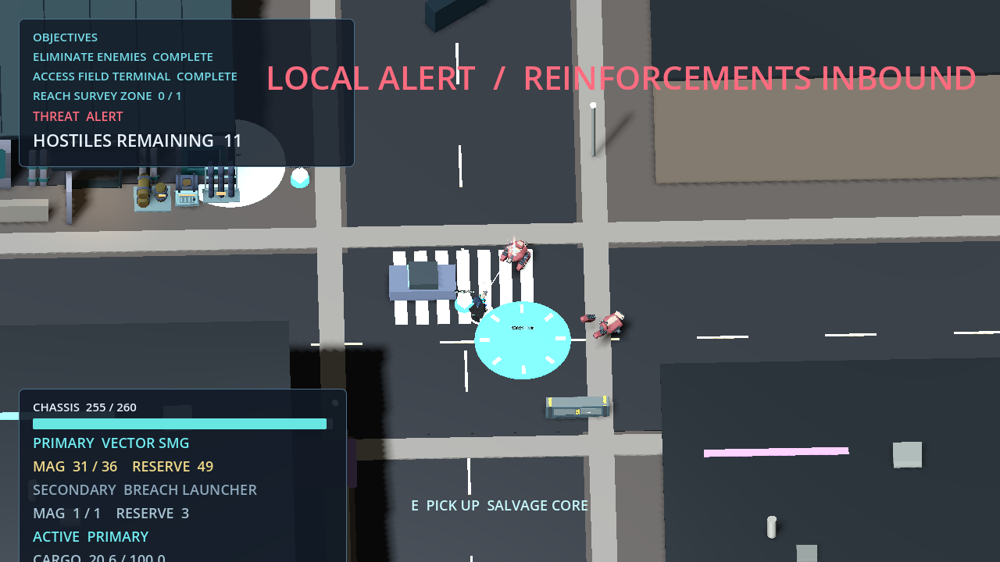
route_SMG/combat_enemy_death_4.pngProduction field office / Hanger
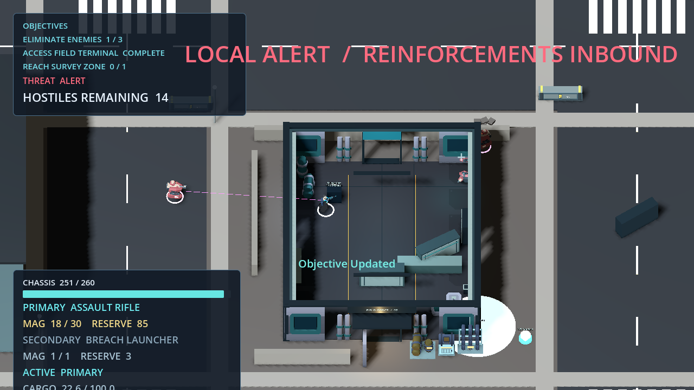
route_Rifle/04b_terminal_interacted.pngroute_Rifle/01_hanger.pngProduction extraction / return
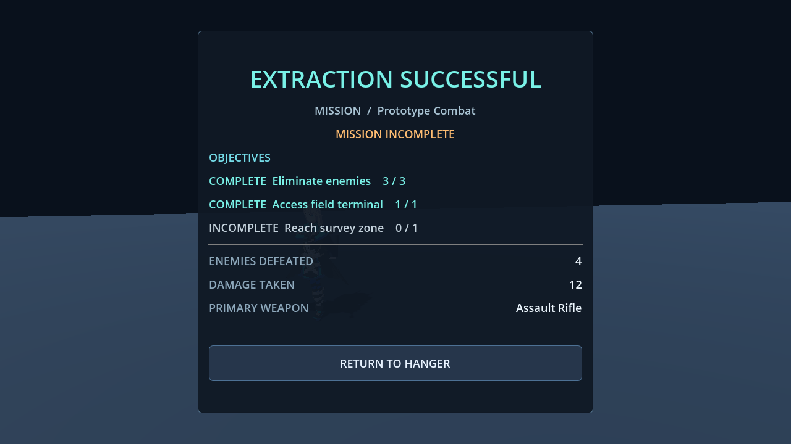
route_Rifle/06_result.png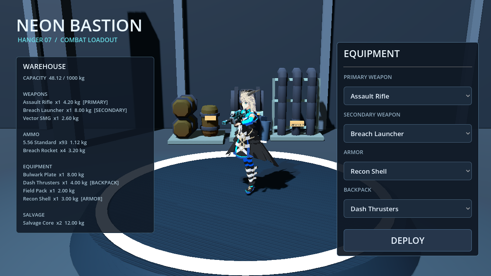
route_Rifle/07_return_hanger.png